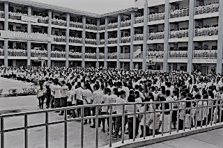
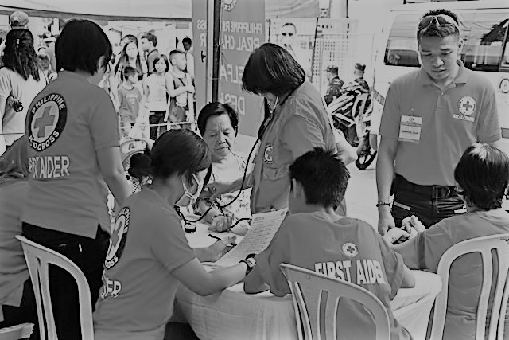
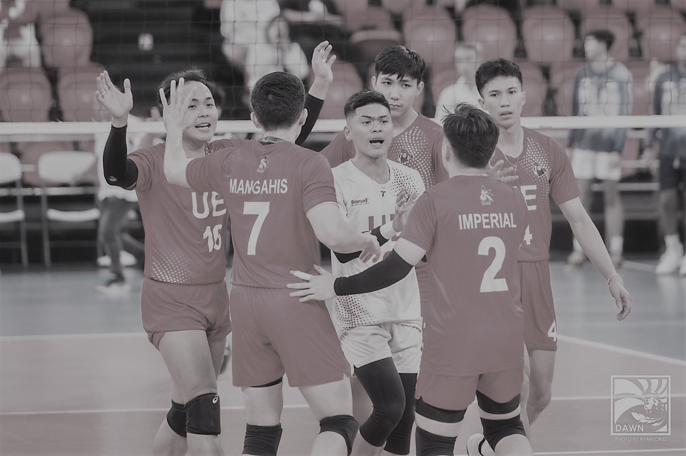

|  |
I could not boast much about my skills since I have only a few that includes: writing. However, there is a condition. Writing, without pressure. I love writing, but not so much when I am forced to puke words in a limited amount of time. I like to keep my words pouring swiftly. Calm and calculated. I was inclined on writing poems when I was younger. But as I grew up, so did the volume of the words I wanted to speak. So I started writing prose. |
|  |
In recent years, I have participated in a variety of sports. I engaged in taekwondo, volleyball, and badminton. I even took part in two competitions! In taekwondo, I still recall taking home a bronze medal. I stopped participating in sports after that. Instead, I joined a number of organizations, including the Boy Scouts of our school and the Red Cross Youth Marikina Chapter. I also read books on my free time. My favourite author is Madelline Miller. I always get ecstatic when I am reminded of her writing style which is a classic. |
|  |
I kept a journaling career on campus as well. I'm incredibly passionate about writing. I enjoy artistically expressing my thoughts and feelings.Back then, I used to write poems but after a while stopped because of writer’s block. I am still yet to return to creative writing. However, I still write news for the Dawn. |
{kind=link}
{kind=link}
{kind=link}